Account
Approved application · approved logoEvery image below is an actual canonical PNG. Open an image for its full resolution. These are authored design scenes, not current-app browser captures.
Linked accounts · loading
linked-loadingActions and implementation pointers
+ New page · Journal · Explore · All pages · ⌄ · Reflections · › · Reading · Ask Journl · Today’s Journal · Close · Instant · Thinking
apps/web/src/components/auth/settings/account/user-profile.tsxapps/web/src/components/auth/settings/security/security-settings.tsxapps/web/src/components/auth/settings/security/active-sessions.tsxapps/web/src/components/auth/settings/security/linked-account.tsx

SHA256 76a50f8fdd594ef82bac6a41e2fd17806386fd508a84a224a105c5be0817f39e

SHA256 d44aa5ae240d7a4a9b12afa1ca2514039ea4676e2294c36e1118865cc35e3fc8

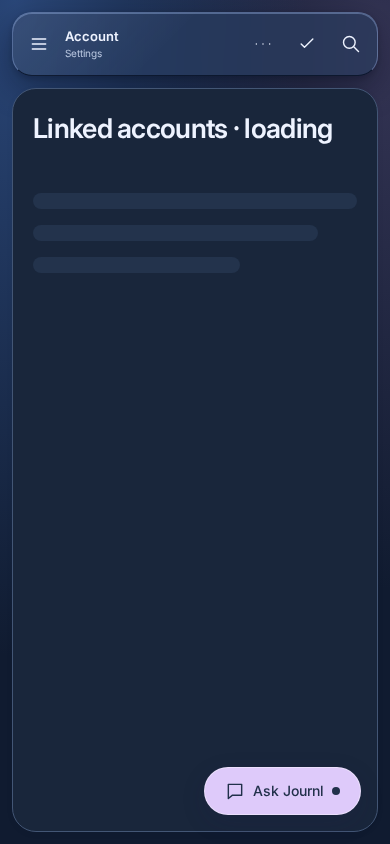
SHA256 3f4c39732be62dbf0601fa2e313f9dd8fa2b6367af4a252eb61bb8027520291e

SHA256 6207e356b0a4af6ac630da23573650b7e0742ea2400bcf4fd079c2e876cc3017
Linked accounts · ready
linked-readyActions and implementation pointers
+ New page · Journal · Explore · All pages · ⌄ · Reflections · › · Reading · Unlink · Link · Ask Journl · Today’s Journal · Close · Instant · Thinking
apps/web/src/components/auth/settings/account/user-profile.tsxapps/web/src/components/auth/settings/security/security-settings.tsxapps/web/src/components/auth/settings/security/active-sessions.tsxapps/web/src/components/auth/settings/security/linked-account.tsx

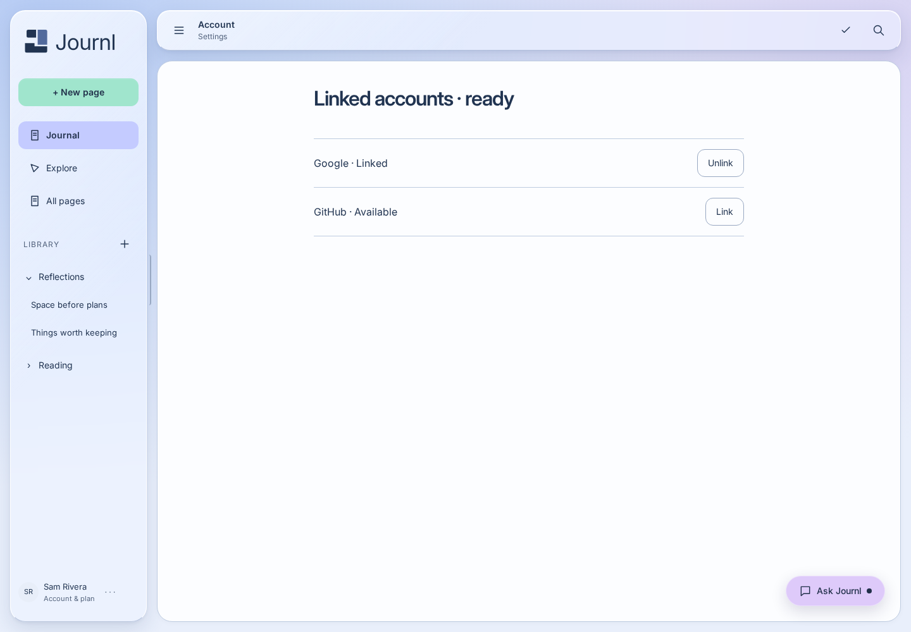
SHA256 c514c63fbe161c8d46f2d1c2dae3f67a4b0bd46e98f17c8bd083e0a130413a36

SHA256 8c98ab38f5c8071e6bf1520d7b6dfe642b29de6dea2171794adc6a9aef2cd103

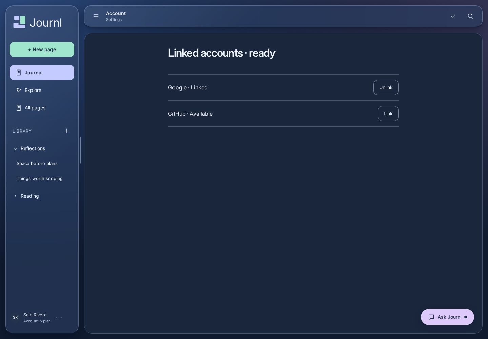
SHA256 9773ecb6f0328f11c3f1c6159ea0554df611e271b8642723f1d20a84b5b21614

SHA256 ca126775b75620c5ba98d09fa0ce564c0e6df8d4161c1e71aee2ba628e337f14
Linked accounts · last-method
linked-last-methodActions and implementation pointers
+ New page · Journal · Explore · All pages · ⌄ · Reflections · › · Reading · Unlink Google · Ask Journl · Today’s Journal · Close · Instant · Thinking
apps/web/src/components/auth/settings/account/user-profile.tsxapps/web/src/components/auth/settings/security/security-settings.tsxapps/web/src/components/auth/settings/security/active-sessions.tsxapps/web/src/components/auth/settings/security/linked-account.tsx

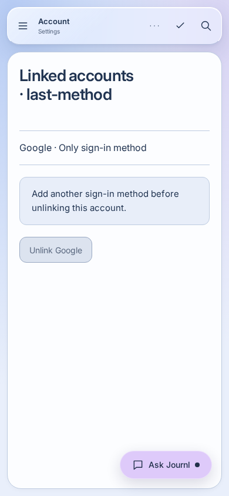
SHA256 c0476db966123133eb2b6cf15afa9a248233355f1edbd1c0442843e3c93f1574

SHA256 f0b7573ee08527977c2742d8852a77cc0d068a54069663d25dc437df57e51bcd

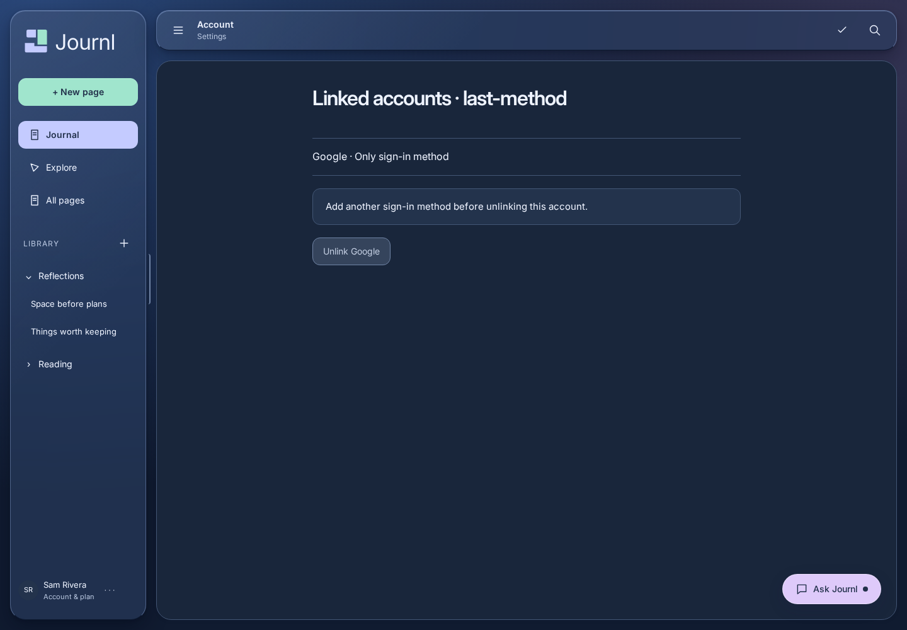
SHA256 b9e124963c4434da10d523265d182d6670cb531e1abc5b351cb60758ecbbe727

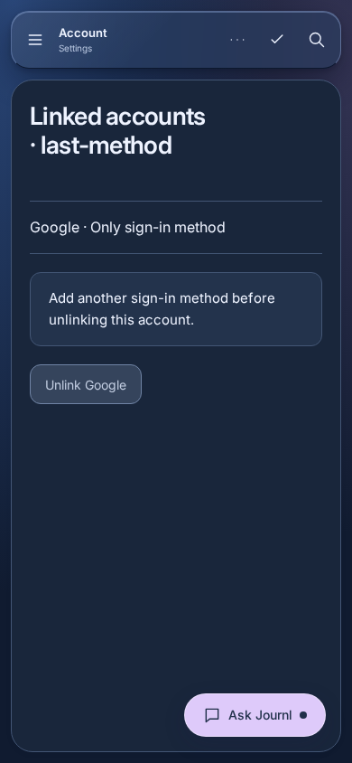
SHA256 cfd655d33ae6f0b46b76bd10b138cd7bbe726cc45d92a0fdbc39c64d5f06d8d7
Linked accounts · link-pending
linked-link-pendingActions and implementation pointers
+ New page · Journal · Explore · All pages · ⌄ · Reflections · › · Reading · Ask Journl · Today’s Journal · Close · Instant · Thinking
apps/web/src/components/auth/settings/account/user-profile.tsxapps/web/src/components/auth/settings/security/security-settings.tsxapps/web/src/components/auth/settings/security/active-sessions.tsxapps/web/src/components/auth/settings/security/linked-account.tsx

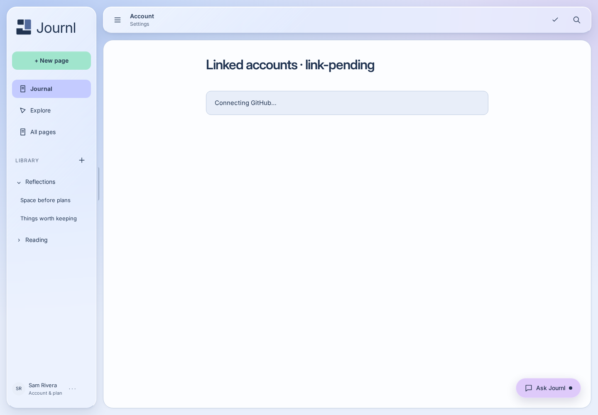
SHA256 b8e42ec4257c788fd722942a5fc2c8a2ad0c023007d56791a65fa731b3d79c81

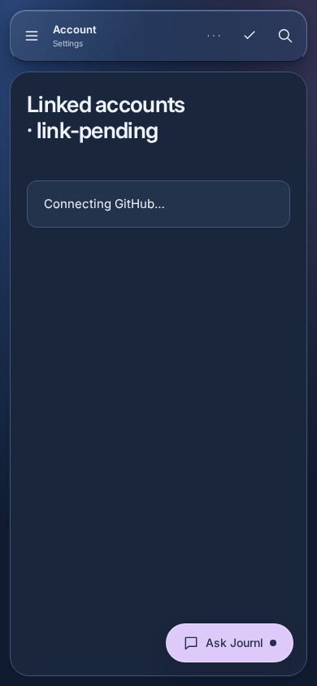
SHA256 745b90f1a354428a2f6c8c9e2ce081e541ddcf73e2f2630c0a889a7e69434aa6

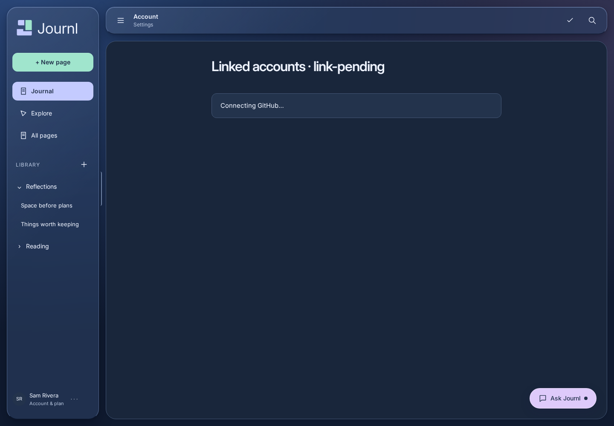
SHA256 9f7fd2380b3b75af4156b88f05139020d566a929d68efaba4c2254fc8855f8af

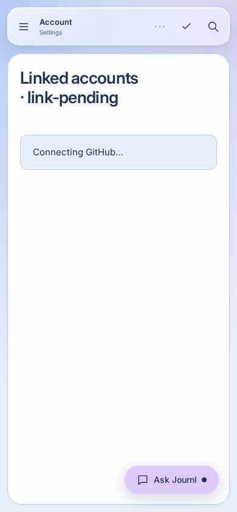
SHA256 5bdd6b8d24b445ebb919578c80f07e9cc62ab6ae3fea9f8ccbf2d52255c4078b
Linked accounts · unlink-confirm
linked-unlink-confirmActions and implementation pointers
× · Cancel · Unlink
apps/web/src/components/auth/settings/account/user-profile.tsxapps/web/src/components/auth/settings/security/security-settings.tsxapps/web/src/components/auth/settings/security/active-sessions.tsxapps/web/src/components/auth/settings/security/linked-account.tsx

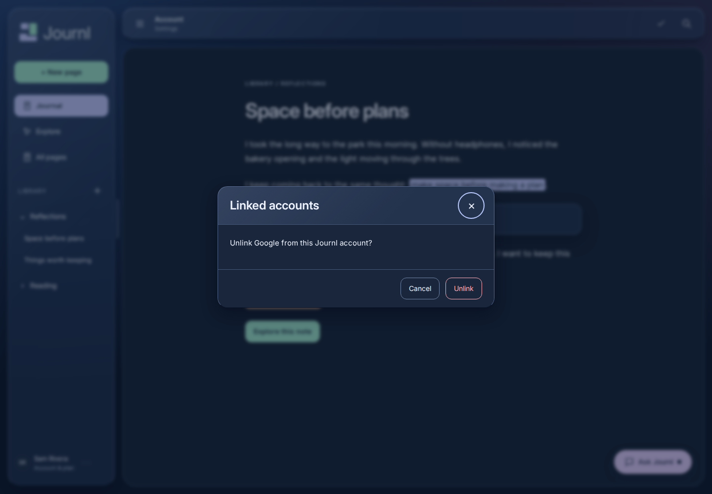
SHA256 ccf55999a8a12dee090c205b0412e82d78ccc29567c97be5eba21bed37147256

SHA256 0b2a7c7b8522dd38a84f3ed24580e47318cf0bea503c6906775e3f5381c0d7e6

SHA256 7560fc6e7c64b3c40dec191a88f7ffa3554f16838bb569d3d244f48ce71f28cc

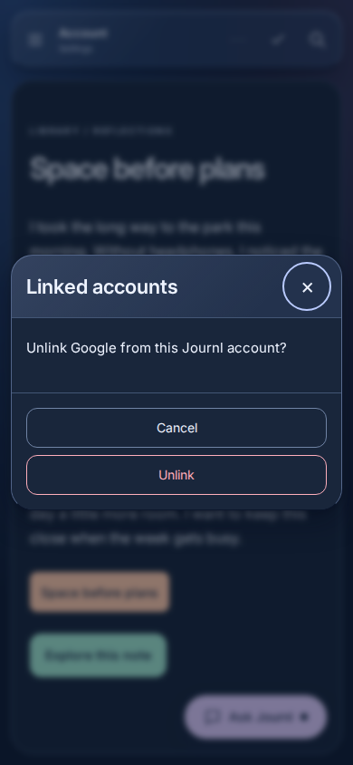
SHA256 ff930a34c832d9cce4ce68b1fbfd0080d030c2df20080cebb6c85c47257e842e
Linked accounts · unlink-pending
linked-unlink-pendingActions and implementation pointers
×
apps/web/src/components/auth/settings/account/user-profile.tsxapps/web/src/components/auth/settings/security/security-settings.tsxapps/web/src/components/auth/settings/security/active-sessions.tsxapps/web/src/components/auth/settings/security/linked-account.tsx

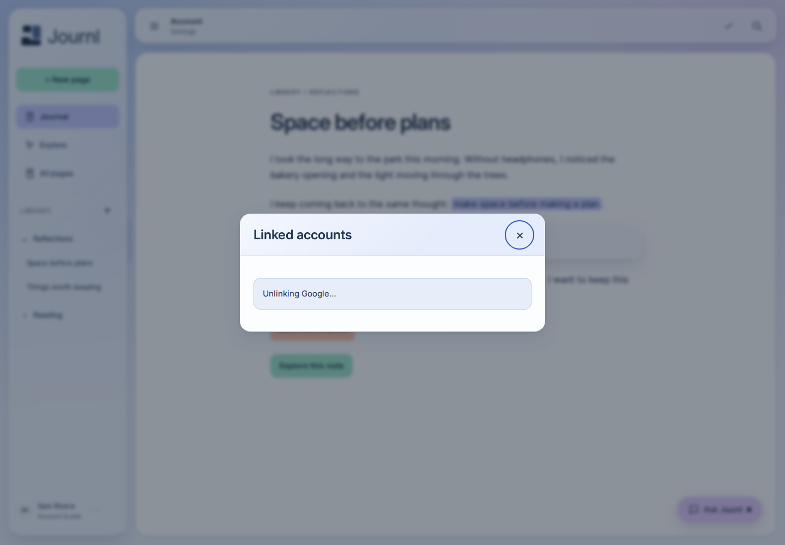
SHA256 a2d46195044110a47f7f98234c84d72b0aeb3698c856d1f04cc183f5aea1cafd

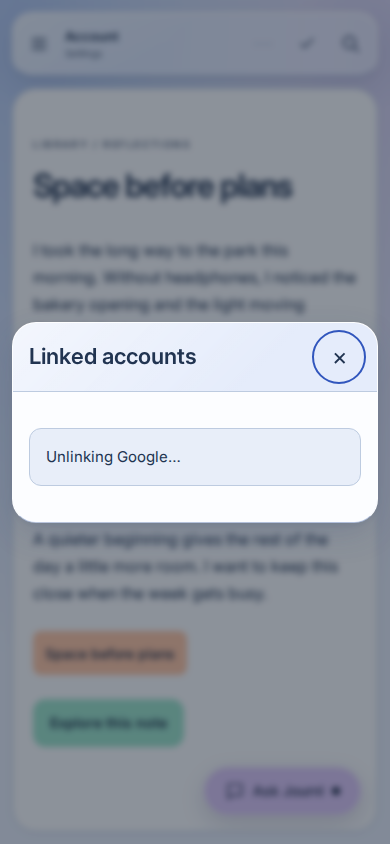
SHA256 5cde5b9b068fc271b5b0523146577d805db95d64715307de496bf5a3f89c8a10

SHA256 49a6e1ecaa1ca9cecfba77793cfa55784e35508eedd417ecbc440ad91fd012f6

SHA256 abb5fdcccd8f14891ae1a6df3b4f192ce1149e7cb184e2feffb9251273e2b3fc
Linked accounts · error
linked-errorActions and implementation pointers
+ New page · Journal · Explore · All pages · ⌄ · Reflections · › · Reading · Try again · Ask Journl · Today’s Journal · Close · Instant · Thinking
apps/web/src/components/auth/settings/account/user-profile.tsxapps/web/src/components/auth/settings/security/security-settings.tsxapps/web/src/components/auth/settings/security/active-sessions.tsxapps/web/src/components/auth/settings/security/linked-account.tsx

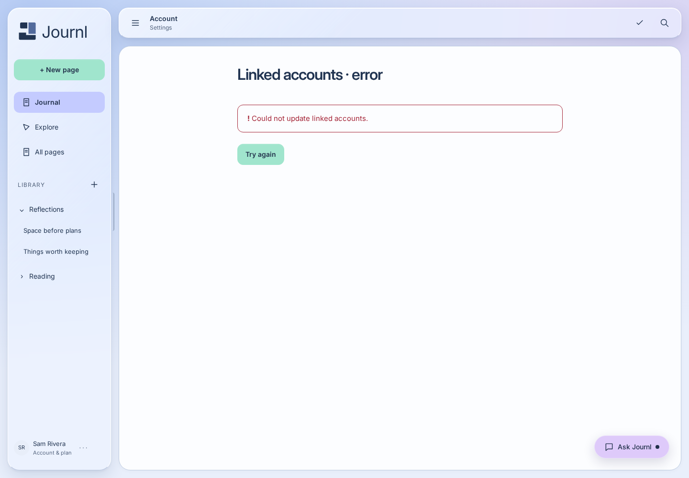
SHA256 0e4363120e6959feafcc2e492213c5ddc40976fb20d2e4a5caa7922e21d47b2c

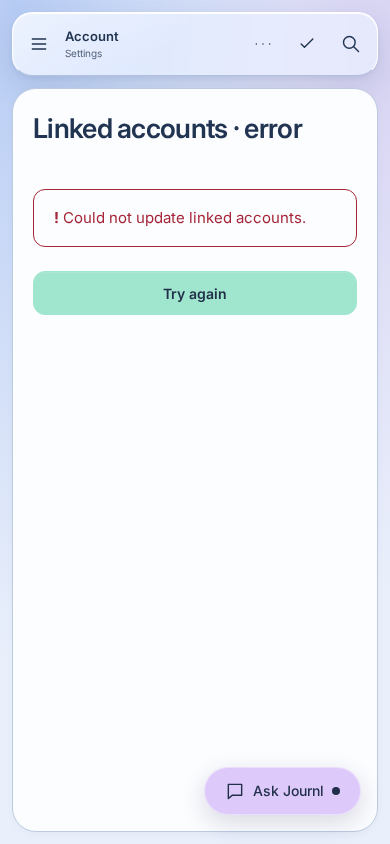
SHA256 2399961a34c273ec4cea4f02c6f0b182dc4b54f8cf66638ef13adb6efc36d88d

SHA256 d4f3f92763e1ca272baebbec46baf32d66c49b33ae8f5bc91c20a4664e93ebdf

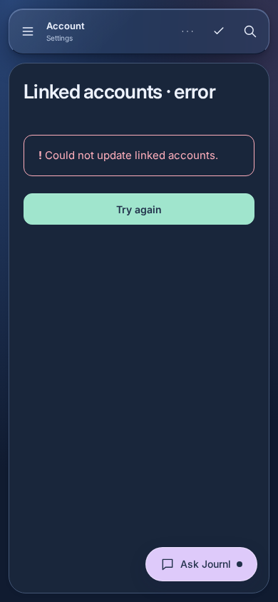
SHA256 710d729551906e7dfef5ddfaedadd55458dde401e940ead175cd8cec1fbca8e7
Active sessions · loading
sessions-loadingActions and implementation pointers
+ New page · Journal · Explore · All pages · ⌄ · Reflections · › · Reading · Ask Journl · Today’s Journal · Close · Instant · Thinking
apps/web/src/components/auth/settings/account/user-profile.tsxapps/web/src/components/auth/settings/security/security-settings.tsxapps/web/src/components/auth/settings/security/active-sessions.tsxapps/web/src/components/auth/settings/security/session-actions.tsx

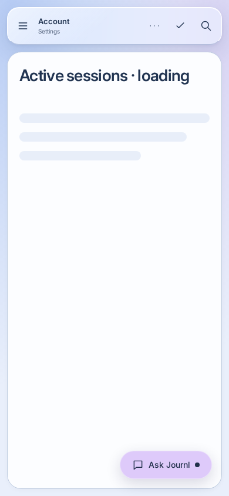
SHA256 5a0263b0d6d14df85e18e75ff2eddbba338d02f6b28778068f59d432cf27be33

SHA256 a7f3181141d47a385c920f1364685b407052ff761bc1d5cb5599146f7f0fc8f5

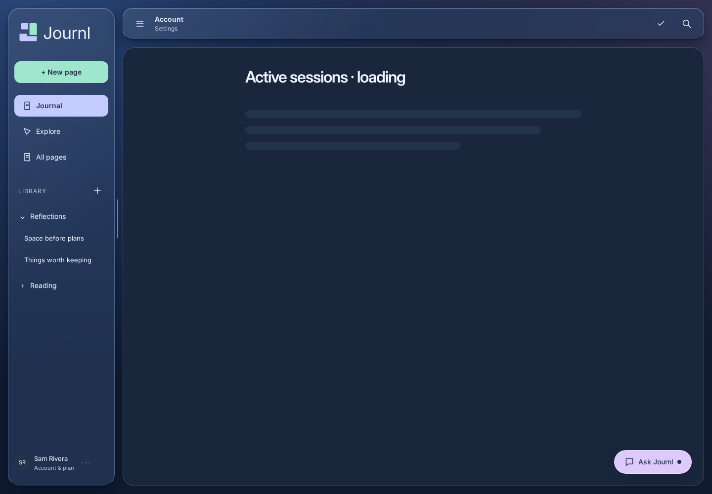
SHA256 09517b65baf8e701074bd0878bd0e9570bc2c2ef43911e4982b33c6ece3d20e8

SHA256 1ebe4d5d6a2c79171b309a185e770bfc6971e973ded8120bd458b272b280a4f7
Active sessions · ready
sessions-readyActions and implementation pointers
+ New page · Journal · Explore · All pages · ⌄ · Reflections · › · Reading · Revoke mobile session · Sign out other devices · Sign out everywhere · Ask Journl · Today’s Journal · Close · Instant · Thinking
apps/web/src/components/auth/settings/account/user-profile.tsxapps/web/src/components/auth/settings/security/security-settings.tsxapps/web/src/components/auth/settings/security/active-sessions.tsxapps/web/src/components/auth/settings/security/session-actions.tsx

SHA256 b8bee0c05afc431c2f049567cf5d542e4a6c1e41caef300187950765026981f1

SHA256 12682d985603c5b59c7668cc43d416f8619021e5d08bbfec5a4a508ef770075b

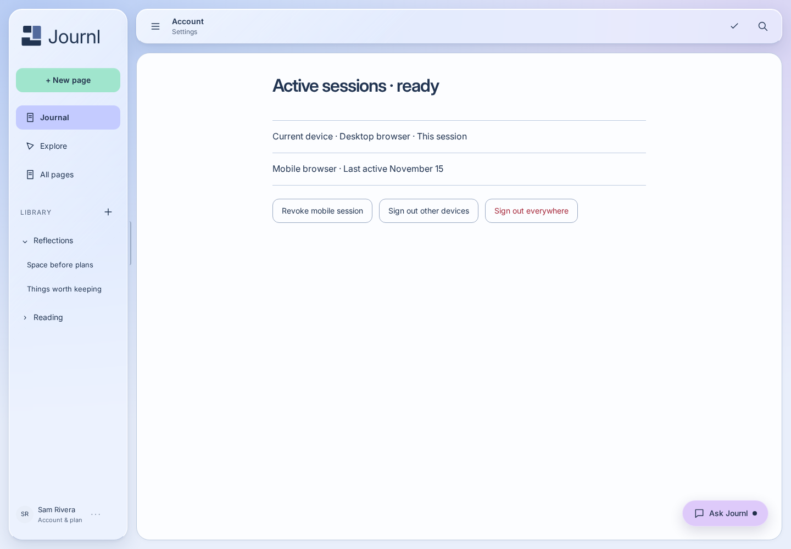
SHA256 c3f8e5e48406dca94a17a7955e4b36539eef510ab34c492f06de5b2c201a78d4

SHA256 bc287c9c93256cd53a4977b39979877eaa60669001b9a14af4f2a1ac8eee6fd8
Active sessions · single
sessions-singleActions and implementation pointers
+ New page · Journal · Explore · All pages · ⌄ · Reflections · › · Reading · Sign out other devices · Ask Journl · Today’s Journal · Close · Instant · Thinking
apps/web/src/components/auth/settings/account/user-profile.tsxapps/web/src/components/auth/settings/security/security-settings.tsxapps/web/src/components/auth/settings/security/active-sessions.tsxapps/web/src/components/auth/settings/security/session-actions.tsx

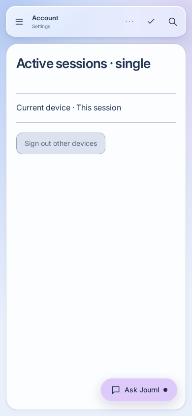
SHA256 27d208368f0a3cb5afffe5040a2f3a608b4d61305b72316ce88d1cb1ceb9ce9f

SHA256 880ed7f41cb9ffdc276edcb96bd4d14dec6fdfb9d8e15db5593bce382accfc09

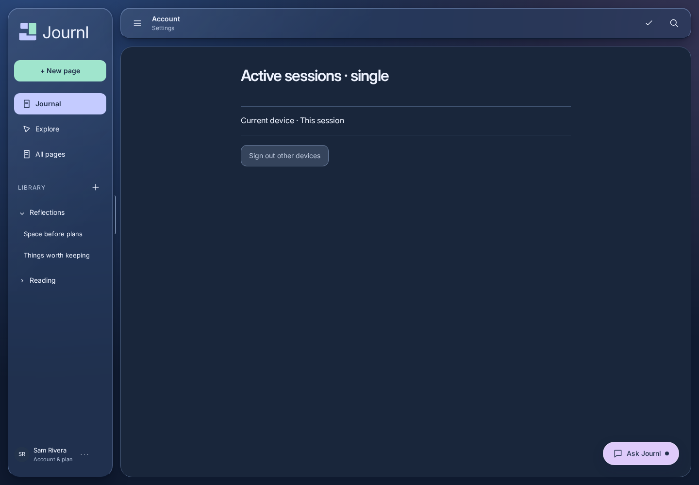
SHA256 7f9f6ddde7ead0a1674d6fddb9507e45cff32f12b780a56f13269b57e28903b7

SHA256 d83fd8885f4b1565cba7d5c3b833f1a76087a249afc8650fc2d51ebcf5ba7b9d